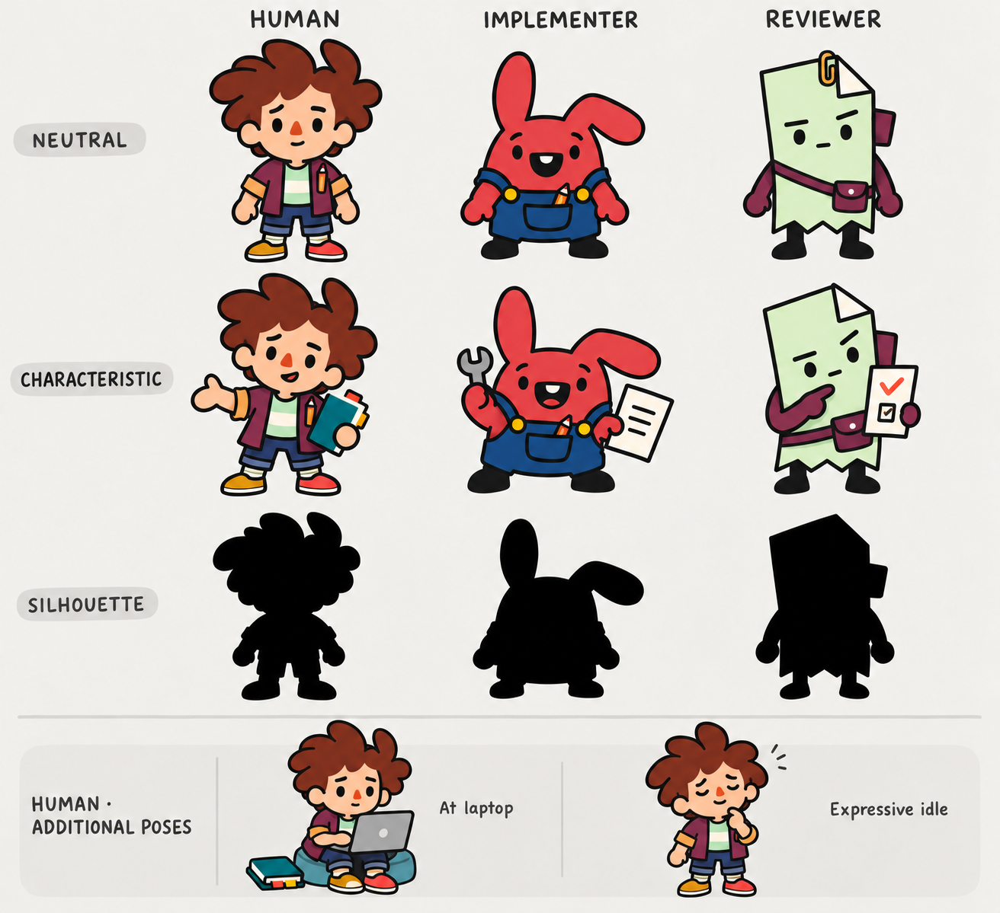
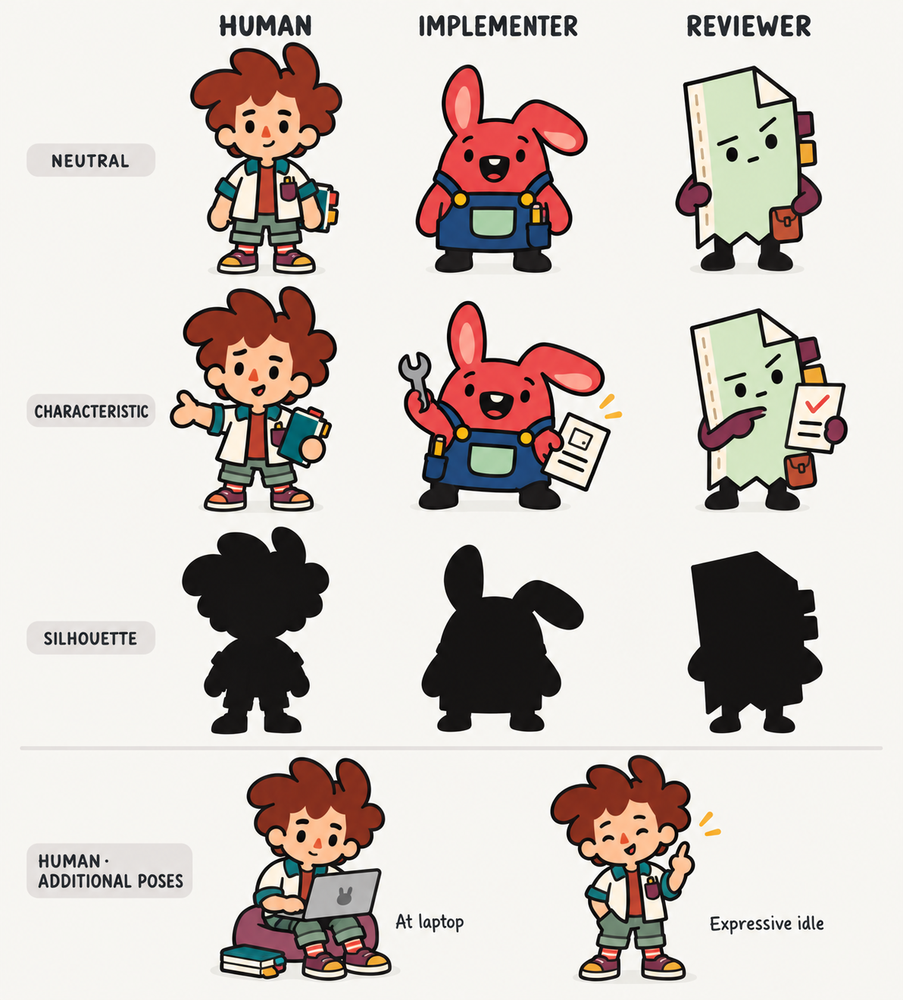
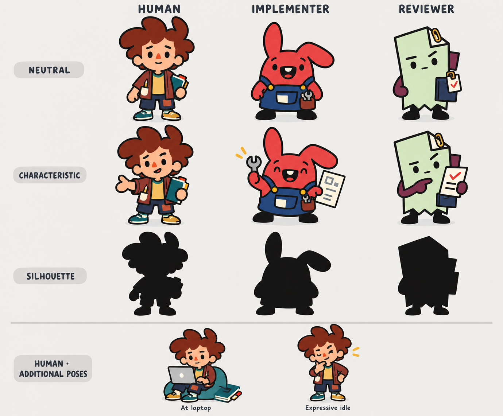

Focused cast refinement / flat 2D / increased character detail
Three richer A · Unruly cast directions
The new reference screenshots guide clothing richness, simple faces and compact human proportions. These remain original ZipperCrew inhabitants: a young creative Human, an eager rabbit maker and a reserved folded-paper Reviewer. Color blocks, cuffs, pockets, notebook tabs and small purposeful tools add personality; detail is concentrated rather than spread across every surface.
Each direction includes the trio in neutral, characteristic and black silhouette rows. The Human's characteristic pose is orchestrating; the bottom strip adds at laptop and expressive idle, giving all four requested Human poses.
1 · Patchwork Cue
Closest to A: plum overshirt, ochre cuffs, mint stripe, pocket pencil and tabbed notebook; rabbit patch pocket; paper strap and pouch.

2 · Soft Rhythm
More clothing contrast: cream/teal overshirt, rust undershirt, cropped sage trousers and striped socks; rabbit apron pocket; paper binder edge and tabs.

3 · Studio Mixer
Calmer workwear: rust cardigan, mustard undershirt, patch trousers and odd shoes; rabbit tool pouch; paper document sleeve and clipped check badge.

Production guidance
Keep the defining hair, layered jacket, cropped trousers, shoes and notebook tabs as chunky separable shapes. Detail should survive at 100–140 pixel character height, with small accessory marks disappearing gracefully rather than becoming visual noise. Rabbit and paper silhouettes remain unlike the Human and one another. The room system reserves a 200-unit Human / 172-unit agent drawing height independent of crew count. The accompanying small-size view uses 140px and 100px pose boxes; final atlas export should also be verified at the exact in-app sizes.
Built-in image_gen. Toca references are used for detail/readability principles; no reference character or specific real person is reproduced. These three options remain proposals for selection.